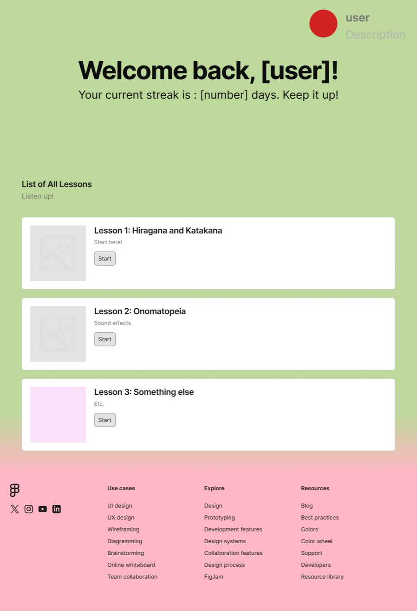

Kiku
A website designed for students studying Japanese at the University of Florida.
Project Details
Kiku was a web app developed as my senior project. The motivation for this project came from a feeling shared between myself and my classmates across varying Japanese courses: there was a lack of beginner-friendly resources for listening practice outside of the classroom and we wished for a way to bridge the gap between in-class study and self-study. Our goal was to make a website that could be used as part of in-class listening activities, while also incentivizing self-study.
I worked primarily on the frontend side of the project. During the design phase I worked on creating wireframes and mockups for the website before making a proof-of-concept using TypeScript and React-Bootstrap to show to my team. My main contribution was collaborating with the backend team, integrating the backend API functionality onto the website and testing the functionality of all the features we had implemented.
Image Gallery

Figma page of lessons page made during the early design phase.
 Lessons page.
Question layout.
Lessons page.
Question layout.